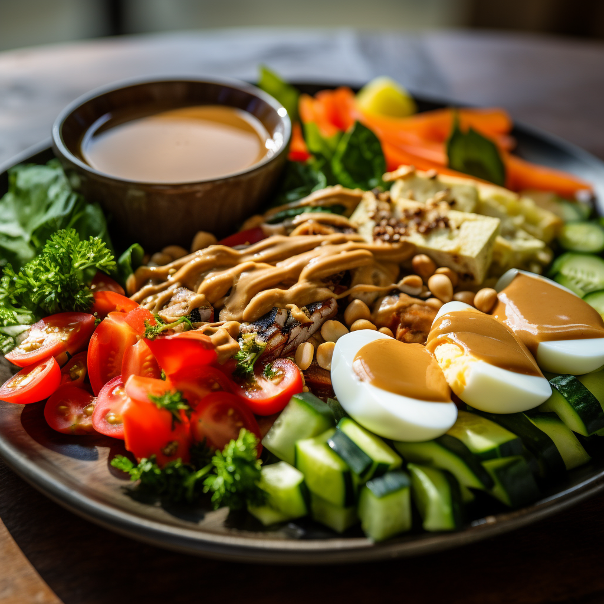

Gado-Gado Delicacy
Experience the refreshing harmony of gado-gado, a delightful Indonesian salad that tantalizes with its vibrant colors and crisp textures. A medley of blanched vegetables, tofu, and boiled eggs are artfully arranged and generously drizzled with a creamy peanut dressing. The dressing, a symphony of flavors composed of peanuts, palm sugar, tamarind, and lime juice, adds a burst of sweet, tangy, and nutty notes, elevating the simple dish to a complex and unforgettable culinary experience.